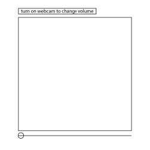
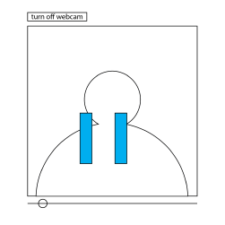
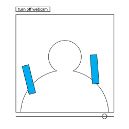
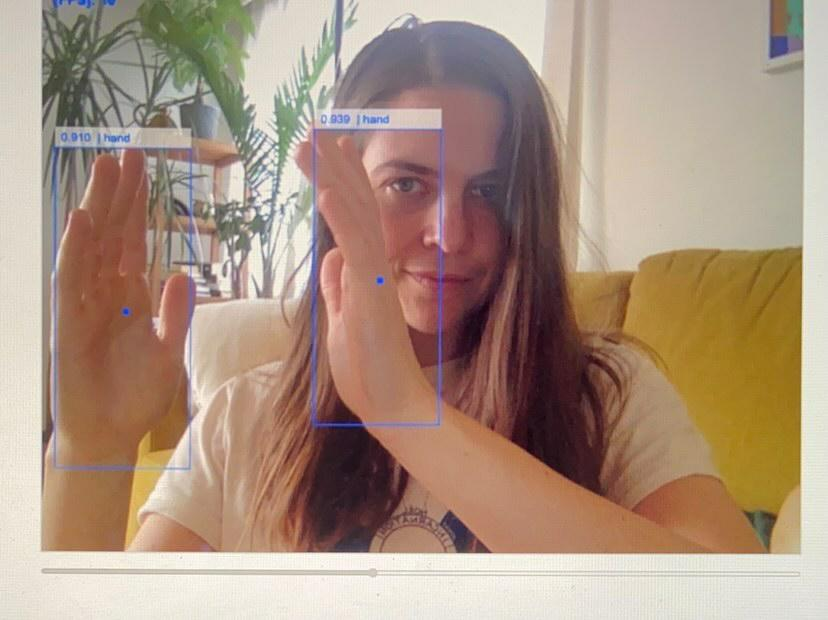
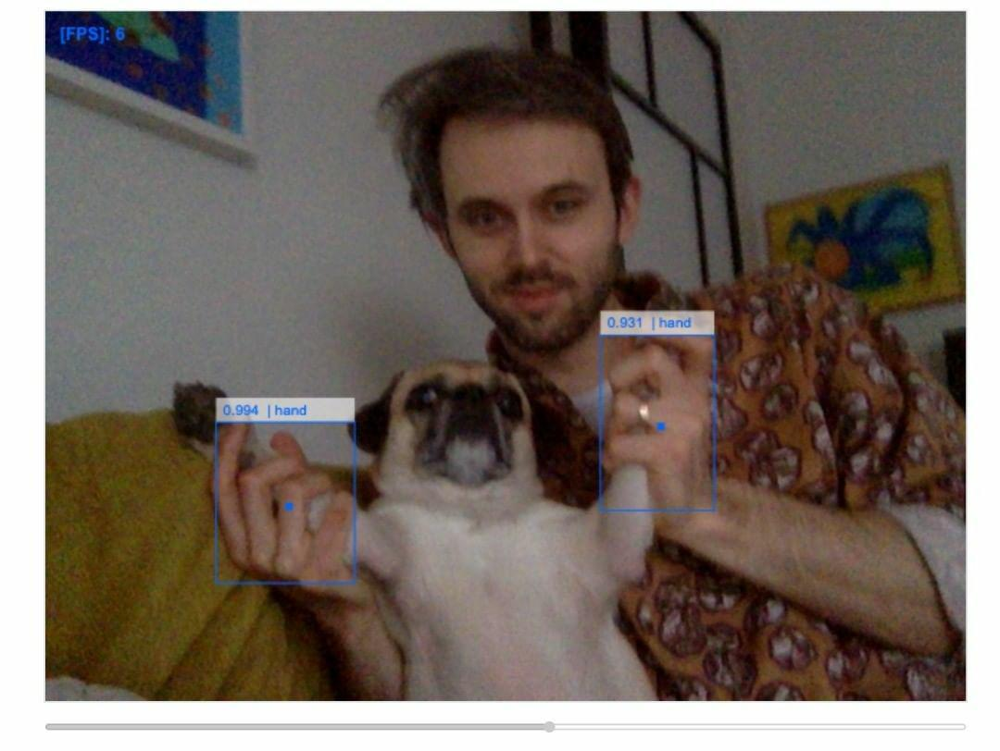

This is an exersize to familiarize myself with using web APIs.
My goal here was to use a Web Cam Api to control a bar slider. The application detects the distance between your hands and translates it to a measurement on the slider.
I decided to develop the hand distance volume controller.
There would be a locked volume controller, a button to turn on
the users webcam and a large section for the webcam video.
The only way the user can change the volume input is by turning
on their webcam changing the distance of their hands to
control the slider.



User Testing
It Works!
Here are a few friends trying it out. The hand tracking isn’t perfect and when your hands get too close together it counts them as one. I limited the number of detectable objects to two, however sometimes the API will detect something that is not your hand as a hand. One other thing that is a littler frusterating is that you need your hand to turn off the webcam. Maybe this could be remedied with a gesture or a timer.
This patch of Handtrack.js hasn’t resolved paw detection..


HandTrack.js
I found a well documented handtracking API on github with
the simple google search “hand tracking api javascript”. It had
a demo with code that I copied and played around with. I read
the documentation and found out how to play with the parameters
and get the x,y positions of the hands once they were
detected.